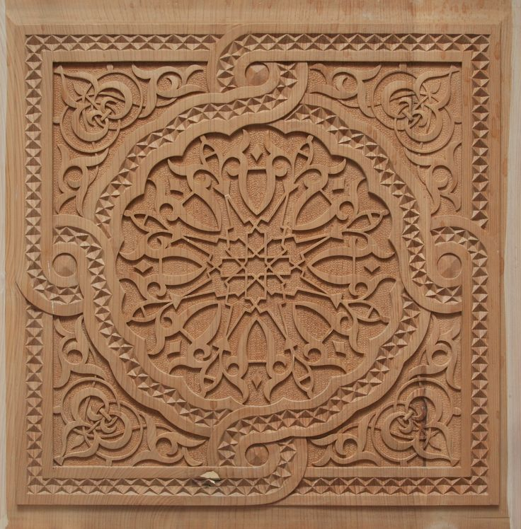
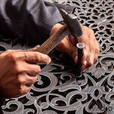

MOROCCAN TOUCH BLOG
Explorez la richesse et l'authenticité du patrimoine marocain
Dans ce blog, nous vous invitons à un voyage à travers l'histoire et la
culture du Maroc, où la beauté et l'art se rencontrent dans
chaque aspect de notre vie. Des artisanats traditionnels
aux délices culinaires, en passant par l'architecture unique
et les coutumes ancestrales, nous mettons en lumière les
détails de notre patrimoine riche qui reflète notre identité
et fait la fierté du monde.
Zlige

Zellige marocain : la beauté de l'art à travers l'histoire
Le zellige marocain est l’un des arts traditionnels les plus emblématiques, reflétant la richesse de l’identité et de la culture marocaines. Cet art est apparu au Maroc avec l’arrivée des Arabes au VIIe siècle, influencé par l’architecture islamique du Moyen-Orient et les motifs andalous, notamment après la chute de Grenade au XVe siècle. Le zellige a évolué au fil des époques, débutant sous forme simple à l’époque almoravide, utilisé dans les mosquées et les forteresses, avant de connaître un essor remarquable à l’époque mérinide. Cette période se distingue par des motifs complexes et des décorations géométriques aux couleurs vives telles que le bleu, le vert et le jaune, comme en témoignent la Medersa Al-Attarine et la Medersa Bou Inania à Fès. L’art du zellige a perduré sous les dynasties saadienne et alaouite, embellissant palais et mosquées.
Fabriqué à la main avec une précision exceptionnelle, le zellige repose sur de petites pièces appelées mosaïques, assemblées par des artisans qualifiés, les "maâlems". Aujourd’hui, cet art reste vivant et continue d’orner l’architecture contemporaine et les designs intérieurs, symbolisant un patrimoine marocain alliant authenticité et beauté.
Le Tissage et la Fabrication des Tapis
Tissage et fabrication des tapis : un artisanat alliant authenticité et créativité
Le tissage des tapis marocains est l’un des arts traditionnels les plus anciens, transmis de génération en génération, reflétant la richesse du patrimoine culturel marocain. Cet art repose sur un savoir-faire manuel exceptionnel, utilisant des matériaux naturels tels que la laine et le coton, et réalisé sur des métiers à tisser traditionnels avec des techniques précises. Les tapis marocains se distinguent par leurs motifs riches et variés, mêlant formes géométriques et détails inspirés de la nature et de la vie quotidienne.
Par exemple, les tapis berbères racontent des histoires et des traditions propres aux femmes qui les tissent, tandis que les tapis urbains se caractérisent par leurs ornements raffinés et leurs couleurs éclatantes. Les tapis marocains restent une œuvre d’art qui apporte chaleur et élégance à tout intérieur, que ce soit pour un usage quotidien ou comme pièce décorative.
La Sculpture sur Bois

Sculpture sur bois : un art alliant savoir-faire et beauté
La sculpture sur bois est l’un des arts traditionnels les plus anciens au Maroc, reflétant la créativité des artisans marocains qui transforment le bois en véritables œuvres d’art ornées de détails époustouflants. Cet art repose sur l’utilisation d’outils précis et de techniques transmises de génération en génération, où le bois est minutieusement gravé pour faire ressortir des motifs géométriques, floraux ou des calligraphies arabes.
La sculpture sur bois est utilisée pour embellir les portes, les plafonds, les meubles et les coffres traditionnels, ajoutant une touche d’authenticité et d’élégance à chaque pièce. Cet art reste un témoignage du savoir-faire exceptionnel et du raffinement qui caractérisent le patrimoine marocain, continuant à séduire les amateurs de beauté à travers le monde.
La poterie et la céramique
La poterie et la céramique : un patrimoine marocain ancestral
La poterie et la céramique figurent parmi les métiers traditionnels les plus anciens au Maroc, reflétant le savoir-faire et la créativité des artisans qui transforment l’argile en œuvres d’art alliant esthétique et utilité. Cet art repose sur des techniques manuelles transmises de génération en génération, où l’argile est façonnée sur des tours manuels, puis ornée de motifs inspirés du patrimoine marocain, tels que des gravures géométriques et des dessins floraux.
La poterie est utilisée pour fabriquer des objets du quotidien comme les tajines, les récipients et les vases, ainsi que des pièces décoratives apportant une touche authentique aux intérieurs. Des villes comme Safi et Fès sont des centres renommés pour la céramique, célèbres pour leurs produits de grande qualité aux couleurs éclatantes comme le bleu et le vert.
La poterie et la céramique marocaines demeurent un symbole d’artisanat et de tradition, fusionnant héritage et modernité.
Fabrication et gravure sur cuivre

Fabrication et gravure sur cuivre : un art traditionnel racontant des histoires
La fabrication et la gravure sur cuivre est l'un des métiers artisanaux les plus fascinants du Maroc, illustrant le savoir-faire des artisans marocains qui transforment le cuivre en véritables œuvres d'art décorées de motifs élaborés.
Le cuivre est minutieusement gravé pour créer des motifs géométriques, floraux, ou même des images historiques qui racontent la culture marocaine.
Le cuivre est utilisé pour fabriquer une variété d'objets tels que des ustensiles, des lampes et des boîtes, ainsi que des pièces décoratives qui embellissent les maisons et les palais.
Le cuivre marocain se distingue par son éclat, sa robustesse, et sa capacité à conserver sa beauté au fil du temps. Des villes comme Fès et Marrakech sont considérées comme des centres renommés de fabrication de cuivre, où l'on peut trouver des ateliers traditionnels qui créent des pièces artisanales en cuivre.
La fabrication et la gravure sur cuivre représentent l'élégance de l'artisanat traditionnel et constituent une part essentielle du patrimoine culturel marocain, admiré à travers le monde.
©copyright 2024. All rights reserved . desgind by Siham Elhaddaoui